Bounded studio refinement 32 native images / 16 pairs. Left: accepted research grounded recipe. Right: one optional refined bundle. ORIGINAL LIVE DEFAULT UNCHANGED. Sol presentation experiment; not Astra work. Preference pending. No objective realism claim.
Unchanged model/material/camera/exposure1.05. 600x400 DPR1. Environment orientation/panel/light and floor-shadow bundle, not an isolated causal test. Click images for native pixels.
Observed tradeoffs and limitations · Preregistered brief
Carmine Candy
front-three-quarter
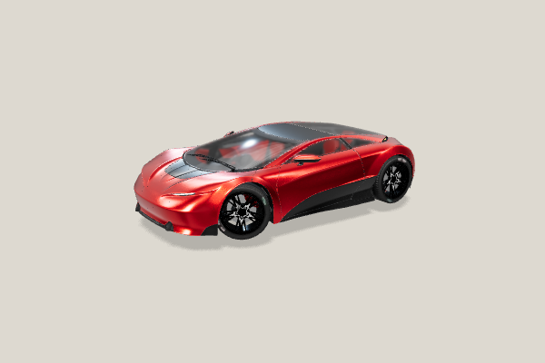
grounded-studio — Carmine Candy — front-three-quarter 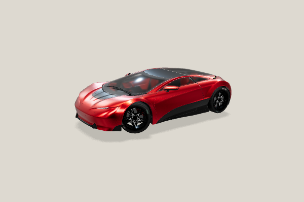
grounded-studio-refined — Carmine Candy — front-three-quarter
side
rear-three-quarter
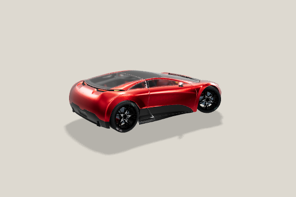
grounded-studio — Carmine Candy — rear-three-quarter 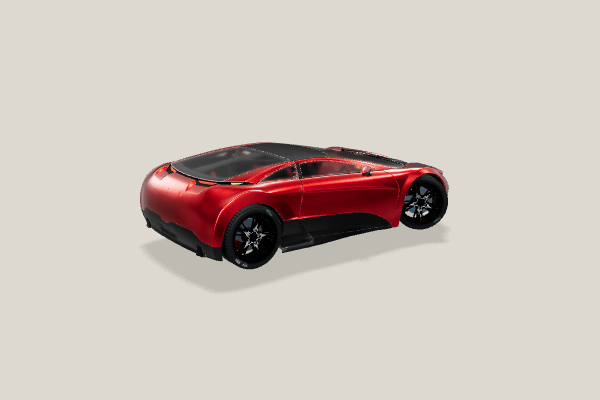
grounded-studio-refined — Carmine Candy — rear-three-quarter
glass
grounded-studio — Carmine Candy — glass 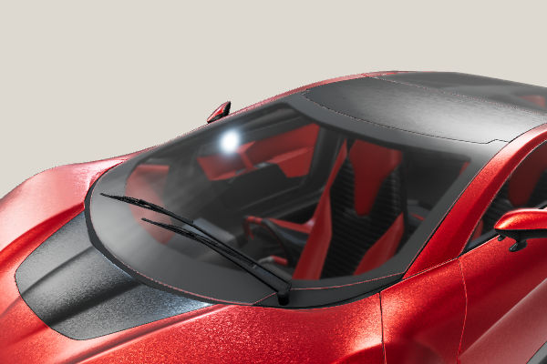
grounded-studio-refined — Carmine Candy — glass
Pearly Swirly
front-three-quarter
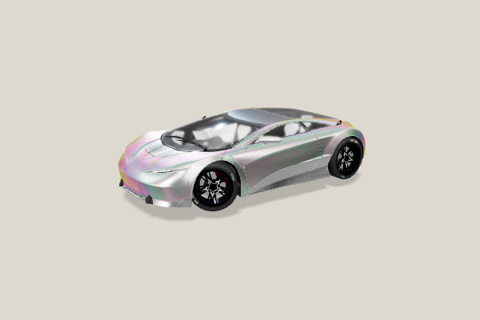
grounded-studio — Pearly Swirly — front-three-quarter 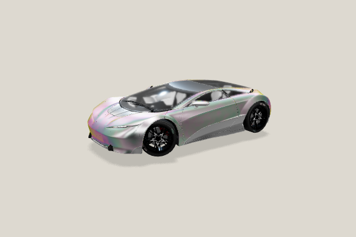
grounded-studio-refined — Pearly Swirly — front-three-quarter
side
grounded-studio — Pearly Swirly — side 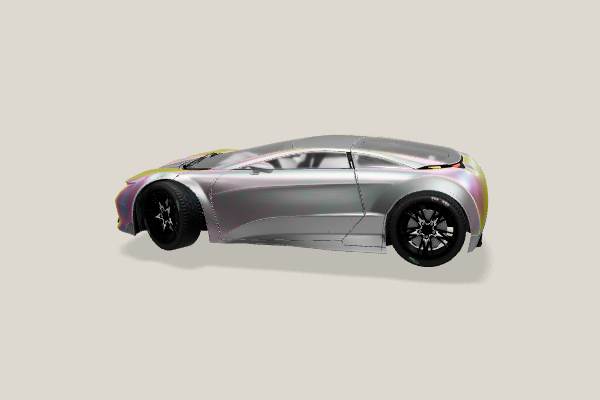
grounded-studio-refined — Pearly Swirly — side
rear-three-quarter
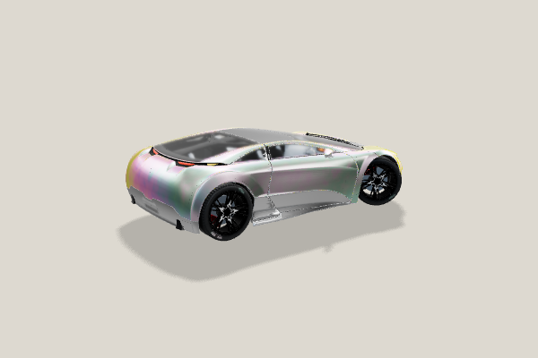
grounded-studio — Pearly Swirly — rear-three-quarter 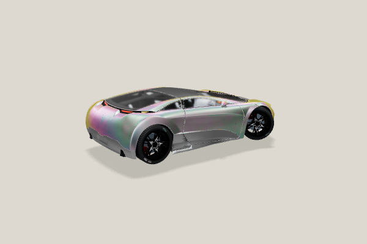
grounded-studio-refined — Pearly Swirly — rear-three-quarter
glass
Torched Graphite
front-three-quarter
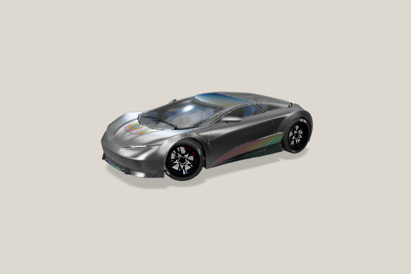
grounded-studio — Torched Graphite — front-three-quarter 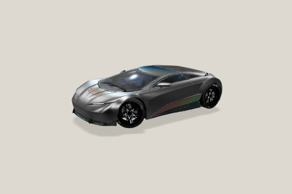
grounded-studio-refined — Torched Graphite — front-three-quarter
side
grounded-studio — Torched Graphite — side 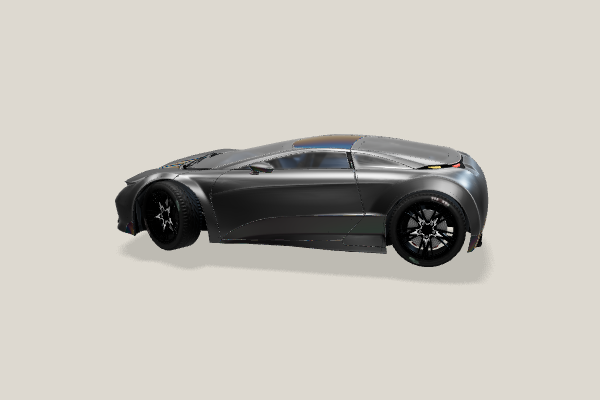
grounded-studio-refined — Torched Graphite — side
rear-three-quarter
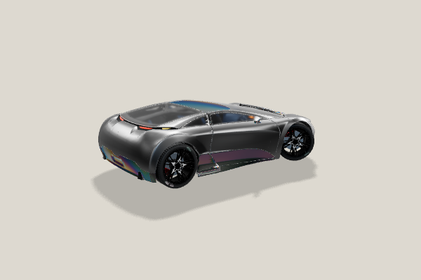
grounded-studio — Torched Graphite — rear-three-quarter 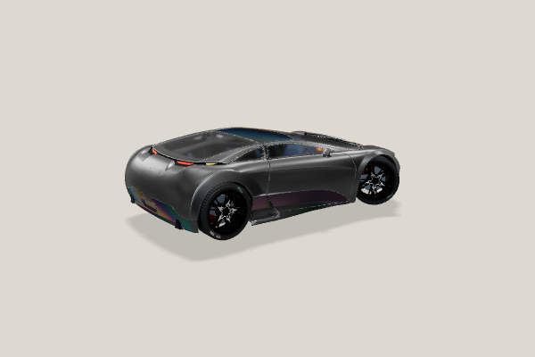
grounded-studio-refined — Torched Graphite — rear-three-quarter
glass
grounded-studio — Torched Graphite — glass 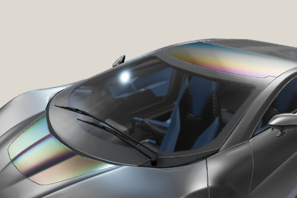
grounded-studio-refined — Torched Graphite — glass
Estuary Enamel
front-three-quarter
grounded-studio — Estuary Enamel — front-three-quarter 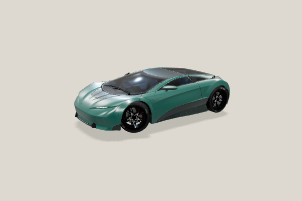
grounded-studio-refined — Estuary Enamel — front-three-quarter
side
rear-three-quarter
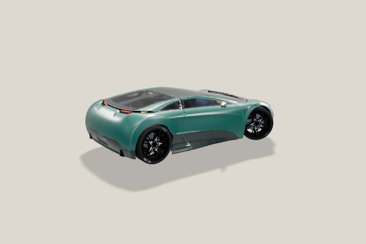
grounded-studio — Estuary Enamel — rear-three-quarter 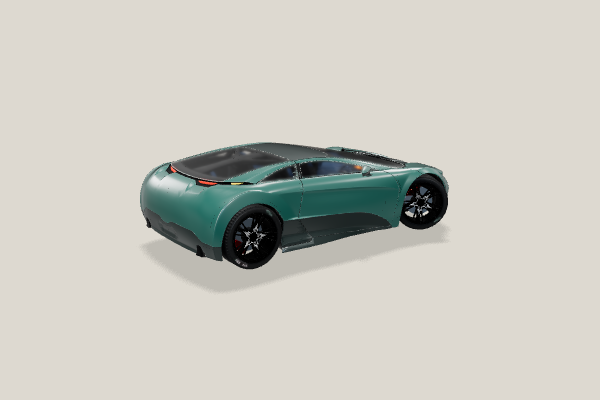
grounded-studio-refined — Estuary Enamel — rear-three-quarter
glass
grounded-studio — Estuary Enamel — glass 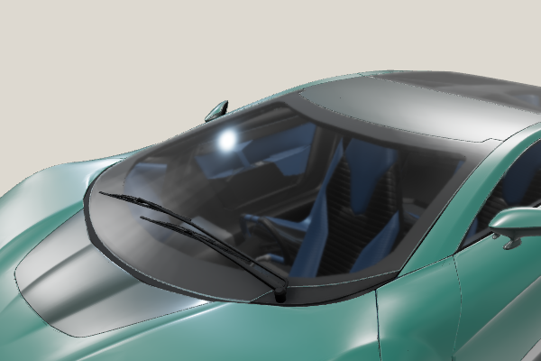
grounded-studio-refined — Estuary Enamel — glass